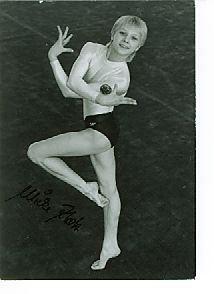

Ulrike Klotz (GDR)
1985 World FX Bronze Medalist

Medal Total
Olympic Games: 1
Bronze
World Championships: 3 Bronze
Ulrike was born on November 15, 1970 in Cottbus. She began gymnastics at age 5 and trained at Dynamo Berlin.
Competition Results
1981
Children's and Youth Spartakiade: 1st FX (age 10 group)
1983
Children's and Youth Spartakiade: 1st FX (age 12 group)
1985
Chunichi Cup: 6th AA, 1st FX, 2nd UB, 8th V
Cottbus International: 3rd AA, 1st B, 2nd FX
DTV Cup: 2nd AA
GDR Championships: 3rd AA, 1st FX, 2nd V, 3rd B
GDR-HUN Dual Meet: 1st Team, 2nd AA
GDR-SWE-NOR Meet: 1st Team, 2nd AA
Moncada Cup: 4th AA
Tokyo Cup: 1st FX, 2nd UB
World Championships: 3rd Team, 13th AA, 3rd FX
1987
Gander Memorial: 8th AA
GDR Championships: 4th AA
GDR-HOL-HUN: 3rd AA
GDR-SWE-NOR: 4th AA
Swiss Cup: 5th Team
World Championships: 3rd Team, 8th AA, 5th B
1988
GDR-CSSR Dual Meet: 1st Team, 2nd AA
GDR-ESP Dual Meet: 1st Team, 8th AA
GDR Championships: 5th AA, 4th UB, 4th FX
Intl. Championships of Romania: 5th AA, 3rd FX
Olympics: 3rd Team, 11th AA, 8th B
This page was created on November
22, 2001 and was last updated on January 31, 2021.
© Gymn Forum